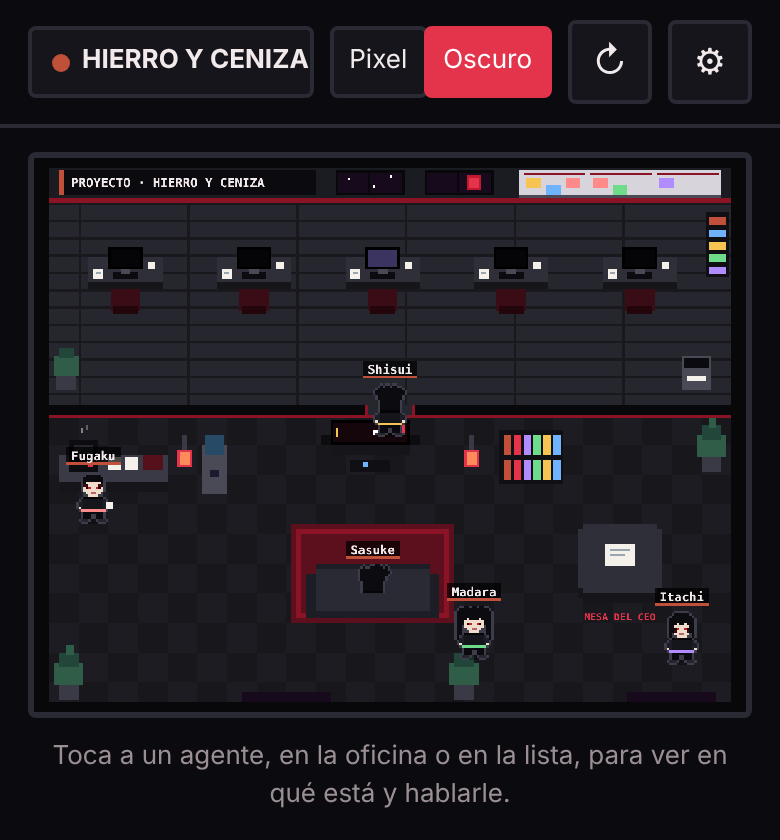

La pantalla de inicio es lo que te toca hacer, en tarjetas de 2 líneas con el botón ahí mismo.
Al abrir una tarea ves «En corto»: qué verás en el juego, por qué ahora y cómo probarlo. Lo técnico va plegado.
La oficina pixel queda como pestaña aparte.
Bueno para: decidir rápido desde el celu.
Todo es un chat, como WhatsApp: cada agente te escribe 1-2 líneas cuando termina algo o necesita algo, con botones dentro del mensaje.
Escribes tus ideas abajo y responde Itachi.
Tocar un mensaje abre su hilo con el detalle.
Bueno para: sentir que hablas con personas. Riesgo: con mucho movimiento, el chat se llena.
Arriba sigue la oficina pixel. Debajo, cada agente en una sola línea con un color de estado claro.
Su ficha dice una frase grande (qué hace ahora), qué hizo por última vez y qué sigue. El registro va plegado.
Bueno para: «ver la empresa trabajando», que es lo que te motivó al principio.
